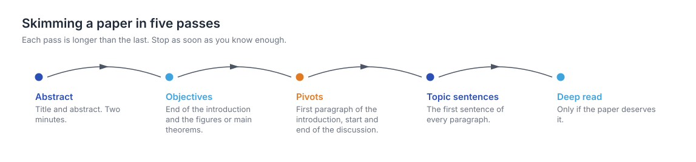

Guides · Reading
Skimming a paper in twenty minutes
You cannot read every paper in full. Read the few paragraphs that carry the story, then the figures and the topic sentences, and decide in twenty minutes whether a paper deserves a deep reading.
Path · Starting your PhD · step 4 of 6
Next in this path: A research method, from the first idea to the preprint →
Thousands of papers appear every week. Experienced researchers do not read them from the first line to the last. They read a few places where the story is concentrated, decide quickly whether the paper matters to them, and keep the deep reading for the few that do. This guide gives a fast first filter. It comes before the three-pass method of How to read a research paper, which is for the papers you decide to keep.
Why a paper can be skimmed#
A well-written paper has the shape of an hourglass. It starts broad, with the general question of the field, narrows to the precise question of the paper, stays narrow in the technical part, and widens again at the end to explain what the results mean. Because of this shape, a few paragraphs carry most of the story.
The ecologist Brian McGill named five of them, the five pivotal paragraphs:
- The abstract: the whole story in compressed form.
- The first paragraph of the introduction: the broad question and the context.
- The last paragraph of the introduction: what the authors set out to do.
- The first paragraph of the discussion: the main findings, in plain words.
- The last paragraph of the discussion: what the findings mean for the field.
Five passes#
The ecologist Jonathan Tonkin builds a reading routine on these paragraphs. Here it is, with the times he suggests.
- Pass 1: title and abstract (2 minutes). What is the question, and why should I care? If you cannot say it in one sentence, stop. This pass works even on paywalled papers.
- Pass 2: objectives and figures (5 minutes). Read the last paragraph of the introduction, then the figures and their captions, without the text of the results. Do the figures support the story the authors announce?
- Pass 3: the remaining pivotal paragraphs (5 minutes). The first paragraph of the introduction, and the first and last paragraphs of the discussion. You now have the authors' version of the story. Remember that peer review does not guarantee that every claim is justified.
- Pass 4: topic sentences (8 minutes). Read the first sentence of every paragraph. In a well-written paper, these sentences alone reconstruct the argument.
- Pass 5: deep reading (as long as needed). Only if the paper deserves it. Go to the parts you need: the methods if you want to reproduce them, the proofs if you will use them, everything if you are refereeing.
After pass four, most papers have given you what you need. Decide consciously whether to continue.
Adapting it to mathematics#
Mathematics papers rarely have a discussion section, but the hourglass is still there. The pivotal places are:
- The abstract.
- The first paragraph of the introduction: where the problem comes from.
- The statements of the main theorems, usually in the introduction, with the paragraph that follows each of them.
- The comparison with earlier work: what is new.
- The last part of the introduction or the final section: applications, examples and open questions.
Replace the figures of pass two by the main theorems and one worked example. Replace the topic sentences of pass four by the statements of all the lemmas and propositions, read in order: they form the skeleton of the proof.
Two exceptions#
- A new field. When you enter an unfamiliar area, read the whole introduction of several papers. It is the fastest way to learn the questions, the vocabulary and the main names.
- Surveys and very short papers. Their structure is different. Read the table of contents of a survey first, and read a short letter in full.
Finding the full text legally#
- Search arXiv or the preprint server of your field.
- Check the authors' web pages and their university repositories.
- Use a tool such as Unpaywall, or the "all versions" link in Google Scholar.
- Write to the corresponding author. Most researchers are happy to send their paper.
Checklist#
- After two minutes, I can state the question of the paper in one sentence.
- I read the objectives before the results.
- I checked that the figures or the main theorems support the announced story.
- I read the topic sentences before deciding to read in depth.
- I decided consciously whether this paper deserves a deep reading.
Summary#
- Most of a paper's story lives in five paragraphs.
- Skim in passes, each one longer than the last.
- Stop when you know enough.
- In mathematics, the main theorems and the comparison with earlier work play the role of the results and the discussion.
Further reading#
This guide is based on an essay on Substack, which builds on an earlier post by Brian McGill:
- Jonathan Tonkin, How I read a scientific paper in 20 minutes, Predirections, 2026.
Discussion
Questions, corrections and your own experience are welcome. Comments live in the forum, on GitHub Discussions, with Markdown and LaTeX.